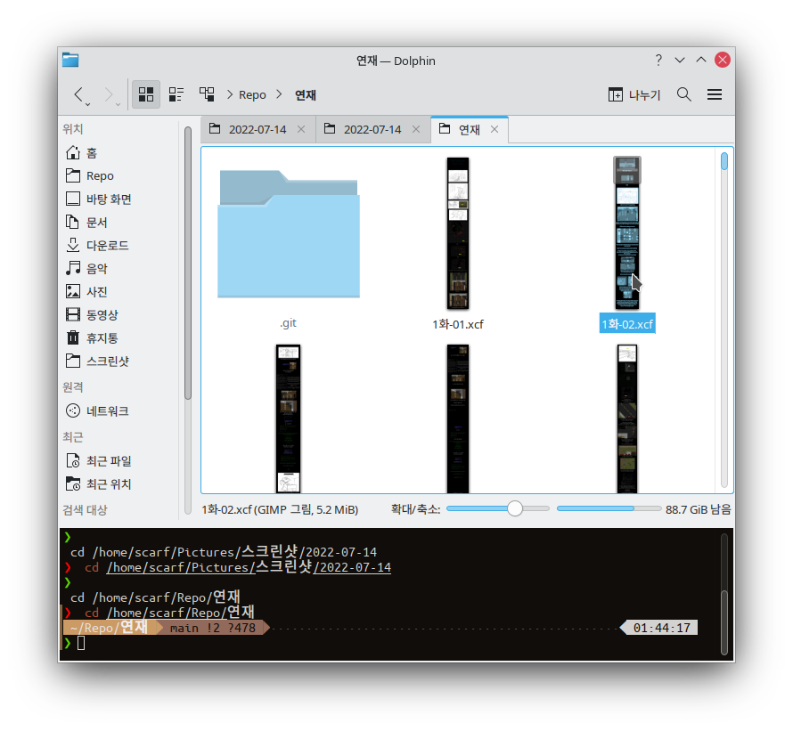
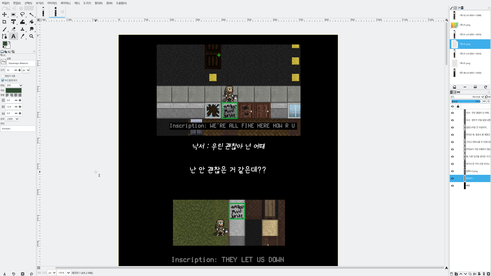
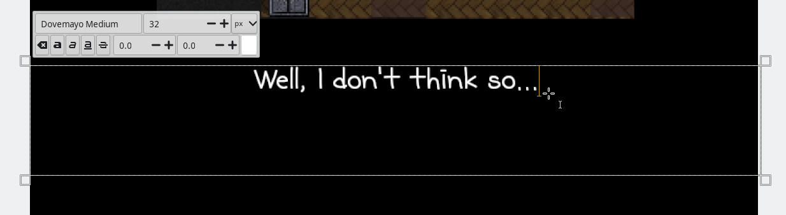
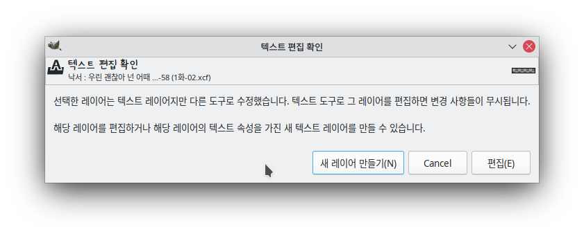
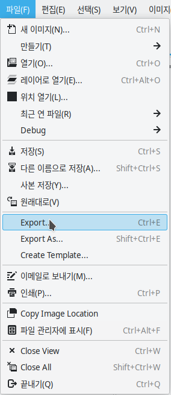
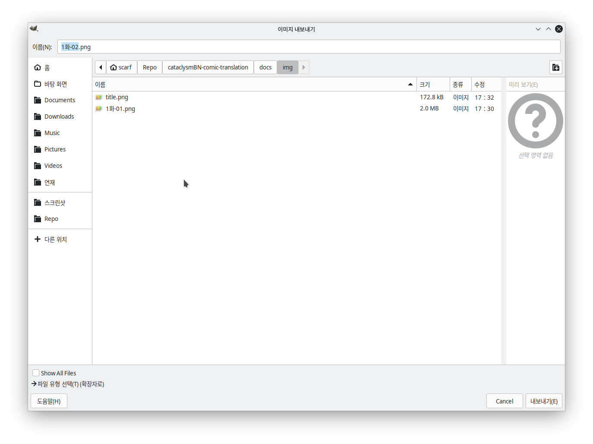
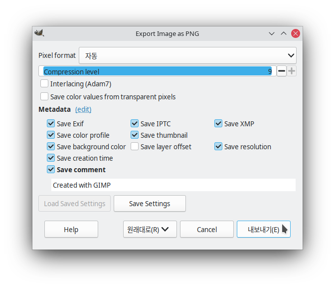

사진 식질하는법
참고사항
- 원본
xcf파일이 있어서 텍스트 레이어에서 글만 수정하면 됨 - 게임 화면은 가급적이면 및에 영어 주석을 달거나 텍스트가 중요할 경우 언어를 영어로 바꿔 스크린샷을 새로 찍는 게 나을 수 있음
- 번역 스프레드시트는 확정된 번역이 아님, 그래도 확실한 것 같다면 마음대로 해도 OK
- TODO: 확정 번역 시트 추가하기
준비물
- 원본 xcf 파일 (대략 3GB)
- 둘기마요 폰트
- GIMP 채신판
- 설치법은 대충 위키하우같은곳에있음
- 번역 스프레드시트
과정

다운받은 폴더를 열면 대충 이렇게 여러 xcf 파일들이 있는데

번역할 파일을 김프로 열면 이런 화면이 반겨줌

텍스트 레이어를 클릭한다음 번역하면 됨

이런 확인 메시지가 자주 뜰 텐데 안 보이게 하는법은 몰?루
무시하려면 편집(E) 누르면 되는데 단축키는 Alt + E

다 마치면 Export를 눌러서 png 파일로 내보내기
 
바로 확인 누르면댐
마크다운에서 보는법
docs/img/디렉토리에 이미지를 넣고../img/1화-01.png)같은 식으로 넣어주면 됨- TODO: 마크다운 생성 자동화하기
웹사이트 클라이언트 실행해서 보는법
준비물: 파이썬 3.10 이상, 의존성 패키지들
python3 -m venv .venv(UNIX)나py -m venv .venv명령어 (Windows)로 가상환경 생성source .venv/bin/activate(UNIX)나.venv\Scripts\activate(Windows)로 가상환경 실행pip install -r requirements.txt명령어로 의존성 패키지들 설치
mkdocs serve 명령어로 테스트 서버 실행
http://127.0.0.1:8000에서 보면 됨
만든 사진은 어디로?
- PR로 올리거나 깃허브 계정이 없으면 이메일로 보내주심 됨
- 이메일 주소:
greenscarf005@gmail.com